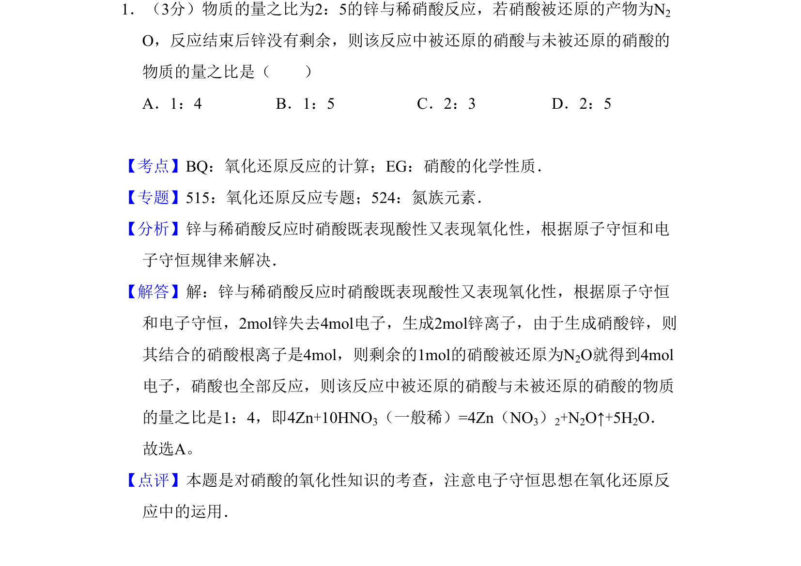
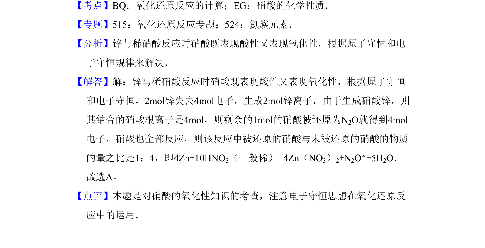

考点：氧化还原反应 电子守恒 原子守恒

锌与稀硝酸反应中硝酸作用的计算

📄 原 PDF 第 1 页：
素材/真题/吉林/2008-2024·（吉林）化学高考真题/2009年高考化学试卷（全国卷Ⅱ）（解析卷）.pdf
1．（3分）物质的量之比为2：5的锌与稀硝酸反应，若硝酸被还原的产物为N2 O，反应结束后锌没有剩余，则该反应中被还原的硝酸与未被还原的硝酸的 物质的量之比是（ ） A．1：4 B．1：5 C．2：3 D．2：5
【考点】BQ：氧化还原反应的计算；EG：硝酸的化学性质．菁优网版权所有 【专题】515：氧化还原反应专题；524：氮族元素． 【分析】锌与稀硝酸反应时硝酸既表现酸性又表现氧化性，根据原子守恒和电 子守恒规律来解决． 【解答】解：锌与稀硝酸反应时硝酸既表现酸性又表现氧化性，根据原子守恒 和电子守恒，2mol锌失去4mol电子，生成2mol锌离子，由于生成硝酸锌，则 其结合的硝酸根离子是4mol，则剩余的1mol的硝酸被还原为N2O就得到4mol 电子，硝酸也全部反应，则该反应中被还原的硝酸与未被还原的硝酸的物质 的量之比是1：4，即4Zn+10HNO3（一般稀）=4Zn（NO3）2+N2O↑+5H2O． 故选A。 【点评】本题是对硝酸的氧化性知识的考查，注意电子守恒思想在氧化还原反 应中的运用．